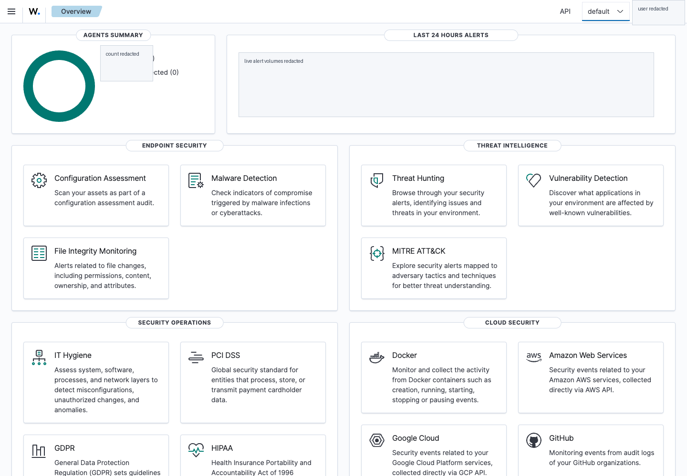
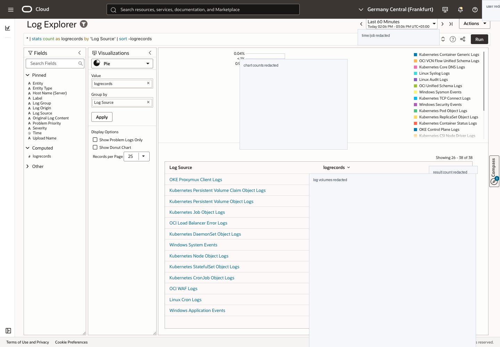

This course teaches how to use Wazuh and OCI Log Analytics together to improve company security posture: endpoint detections, OCI Audit, VCN Flow Logs, Sysmon, dashboards, investigations, posture backlog, and executive reporting.
These screenshots are sanitized. Raw authenticated captures stay ignored under docs/wiki/assets/live/.

